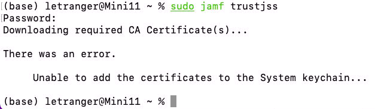

Jamf
Table of Contents

1. 無法enroll client
1.1. 出現錯誤訊息
An error occurred while enrolling computer: The jamf binary could not connect to the JSS because the web certificate is not trusted.
參考: JAMF binary could not connect to the JSS because the web certificate is not trusted?
1.2. Solution
- 先login Jamf server，再login enrollment page下載quickadd.pkg
- https://bee.tnfsh.tn.edu.tw:8443 (trust this web)
- https://bee.tnfsh.tn.edu.tw:8443/enroll
Try running the following command: 新版的OSX要跑這個…..
1: sudo jamf trustJSS
- 取消SSL certificate (unchecked everything in Security in the JSS)
- Open Jamf-Pro web
- Click Computer Management.
- In the “Computer Management - Management Framework” section, click Security.
- Deselect the Enable SSL certificate verification checkbox.
- 更新The tomcat cert
- 檢查client時間(時區)設定
- Update Jamf JSS
- Client換用Firefox, 不要用Safari
- setting it to “Always except during enrollment” which is LESS restrictive than “Always”
- rebuilt the SSL certificate
- From JSS Settings > Apache Tomcat Settings:
- Click Edit.
- Check “Change the SSL Certificate for HTTPS” and click Next.
- Check “Generate a certificate from the JSS’s built-in CA and click Next.
- Click Done.
- Log onto Jamf Pro server and restart Tomcat service.
- Check time and date
2. 無法下載CA Certificate(s) ATTACH
2.1. 錯誤畫面(Attach) ATTACH
{kind=link}
2.1.1. 錯誤畫面(img)

Figure 1: Caption
2.2. 錯誤訊息(verse)
(base) letranger@Mini11 ~ % sudo jamf trustjss
Password:
Downloading required CA Certificate(s)…
There was an error.
Unable to add the certificates to the System keychain…
2.3. 錯誤訊息(quote)
(base) letranger@Mini11 ~ % sudo jamf trustjss Password: Downloading required CA Certificate(s)…
There was an error.
Unable to add the certificates to the System keychain…
2.4. Solutions
3. Encrpyt JSS
4. Downlaod New macOS
4.1. How to Download Full MacOS Installer from Mac Command Line
Launch the Terminal application as usual, then use the following command syntax, replacing “**.**.*” with the installer version you wish to download:
1: softwareupdate --fetch-full-installer --full-installer-version **.**.*Hit return to start downloading the full installer application of that version of MacOS 例如:下載Monterey
1: softwareupdate --fetch-full-installer --full-installer-version 12.4
4.1.1. 列出可下載macOS Installers
1: softwareupdate --list-full-installers
Finding available software Software Update found the following full installers: * Title: macOS Monterey, Version: 12.4, Size: 12103360613K, Build: 21F79 * Title: macOS Monterey, Version: 12.3.1, Size: 12225260436K, Build: 21E258 * Title: macOS Monterey, Version: 12.3, Size: 12222979494K, Build: 21E230 * Title: macOS Monterey, Version: 12.2.1, Size: 12155426708K, Build: 21D62 * Title: macOS Big Sur, Version: 11.6.6, Size: 12412173576K, Build: 20G624 * Title: macOS Big Sur, Version: 11.6.5, Size: 12412317772K, Build: 20G527 * Title: macOS Big Sur, Version: 11.6.4, Size: 12439328867K, Build: 20G417 * Title: macOS Big Sur, Version: 11.6.3, Size: 12435122667K, Build: 20G415 * Title: macOS Big Sur, Version: 11.6.2, Size: 12433351292K, Build: 20G314 * Title: macOS Big Sur, Version: 11.6.1, Size: 12428472512K, Build: 20G224 * Title: macOS Big Sur, Version: 11.5.2, Size: 12440916552K, Build: 20G95 * Title: macOS Catalina, Version: 10.15.7, Size: 8248985973K, Build: 19H15 * Title: macOS Catalina, Version: 10.15.7, Size: 8248854894K, Build: 19H2 * Title: macOS Catalina, Version: 10.15.6, Size: 8248781171K, Build: 19G2021
5. Upgrade to Monterey via Jamf Pro
5.1. remote command
The simplest way is using remote command to update/upgrade.
- Go to a smart/static group > View > Action >
- Send Remote Commands > Update OS version and built-in apps >
- choose the version and Install Action.
5.2. use softwareupdate command
5.3. third-party app
erase
6. Mount SMB file
1: mount -t smbfs //student:tnfsh403@192.168.16.200/caspershare ~/Desktop
7. Change Host Name
1: sudo scutil --set HostName XX 2: sudo scutil --set LocalHostName XX 3: sudo scutil --set ComputerName XX
8. Setup DNS Server
1: sudo networksetup -setdnsservers Ethernet 192.168.7.7 8.8.8.8
9. ZSH
9.1. git clone zshrc
9.2. Install powerlevel10k
1: git clone --depth=1 https://github.com/romkatv/powerlevel10k.git ${ZSH_CUSTOM:-$HOME/.oh-my-zsh/custom}/themes/powerlevel10k
9.3. Install zsh-syntax-highlighting
1: git clone https://github.com/zsh-users/zsh-syntax-highlighting.git 2: echo "source ${(q-)PWD}/zsh-syntax-highlighting/zsh-syntax-highlighting.zsh" >> ${ZDOTDIR:-$HOME}/.zshrc
10. Scripts for changing Safari homepage
1: 2: #!/bin/bash 3: #variable for storing the current users name 4: currentuser=`stat -f "%Su" /dev/console` 5: 6: #substituting as user stored in variable to modify plist 7: #echo "$currentuser" 8: 9: defaults write /Users/$currentuser/Library/Containers/com.apple.Safari/Data/Library/Preferences/com.apple.Safari.plist HomePage moodle.tnfsh.tn.edu.tw 10: defaults write /Users/$currentuser/Library/Containers/com.apple.Safari/Data/Library/Preferences/com.apple.Safari.plist NewWindowBehavior -int 0 11: defaults write /Users/$currentuser/Library/Containers/com.apple.Safari/Data/Library/Preferences/com.apple.Safari.plist NewTabBehavior -int 0 12: chown $currentuser /Users/$currentuser/Library/Containers/com.apple.Safari/Data/Library/Preferences/com.apple.Safari.plist 13: 14: killall cfprefsd
11. Printer
11.1. 無法自Admin加入Printer
- 關閉Jamf Admin
- 開啟Terminal
- 建立空白plist
sudo touch /Library/Preferences/com.jamfsoftware.jamf.plist
- 執行Jamf Admin